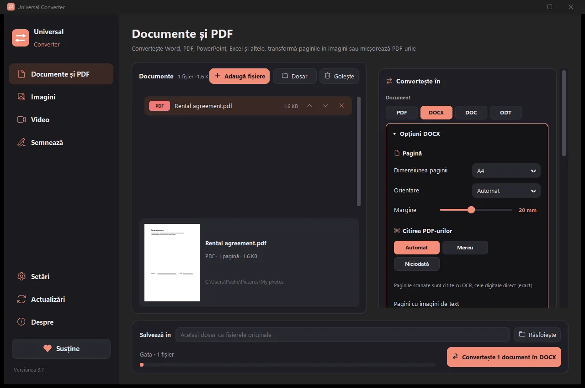
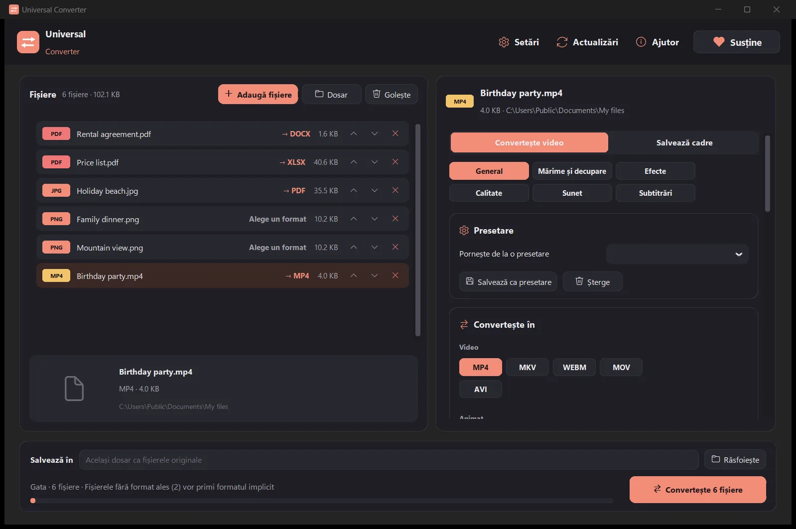
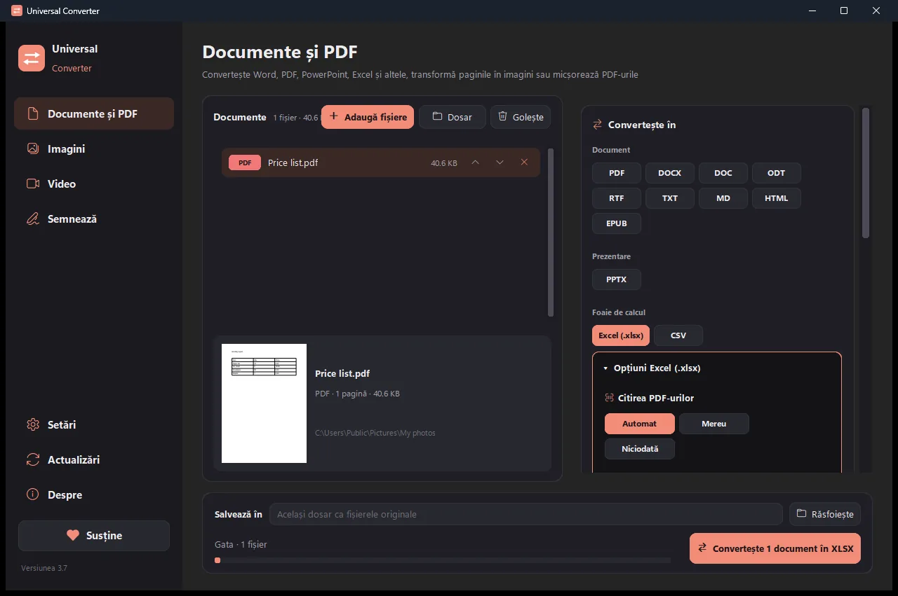
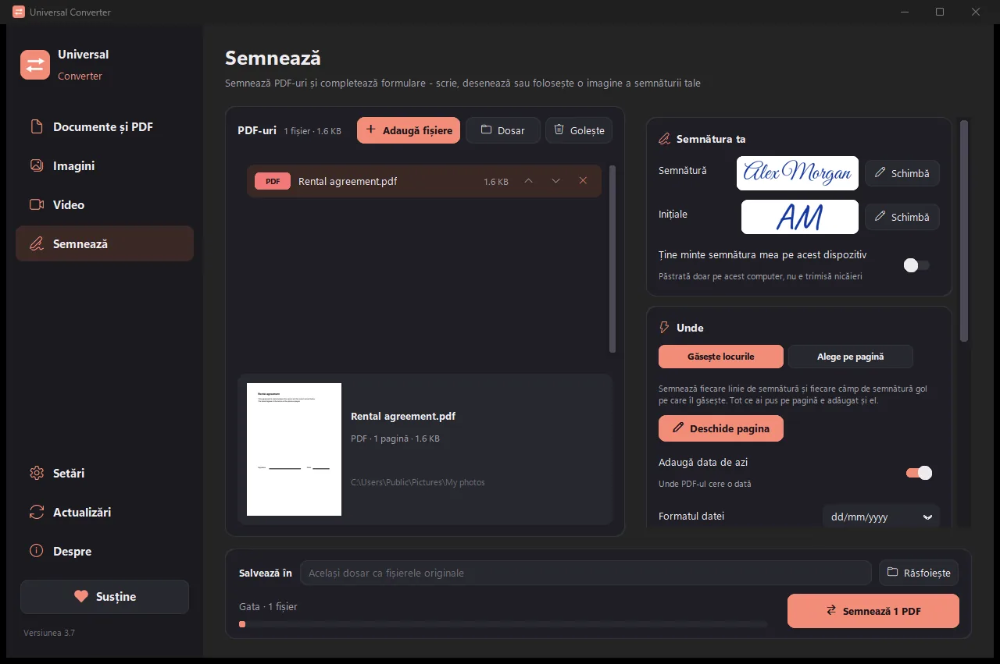
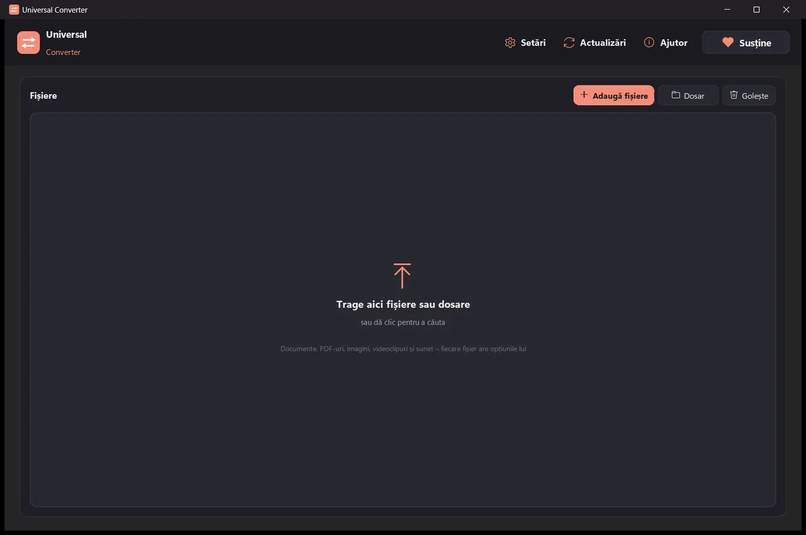

Convertește-ți fișierele pe propriul dispozitiv
Imagini, documente, video și audio, PDF-uri și tabele în Excel, toate într-o singură aplicație. Nimic nu se încarcă: fișierele tale nu îți părăsesc niciodată dispozitivul.
Cum se instalează și se actualizează
- Deschide fișierul .dmg descărcat și trage Universal Converter în Aplicații.
- Deschide aplicația. Prima dată, macOS o blochează pentru că nu este semnată de Apple: dă clic pe Gata.
- Deschide Configurări sistem > Confidențialitate și securitate, derulează în jos, dă clic pe Deschide oricum și introdu parola. Faci asta o singură dată.
Actualizări: dacă permiți la prima deschidere a aplicației, aceasta caută versiuni noi la fiecare pornire, le verifică semnătura digitală și le instalează când alegi tu.
Cum se instalează și se actualizează
- Atinge Descarcă pentru Android pe telefon.
- Deschide fișierul descărcat. Dacă Android întreabă, permite browserului sau managerului de fișiere să instaleze aplicații.
- Atinge Instalează.
Actualizări: când deschizi aplicația, aceasta verifică dacă există o versiune nouă și îți spune când e gata. Descarc-o la fel și instaleaz-o peste cea veche; setările tale se păstrează.
Cum se instalează și se actualizează
- Descarcă fișierul .AppImage.
- Fă-l executabil: clic dreapta, Proprietăți > Permisiuni și permite rularea ca program (sau într-un terminal: chmod +x Universal-Converter-*.AppImage).
- Dă dublu clic pe el. Nu se instalează nimic: aplicația este acest singur fișier.
Actualizări: dacă permiți la prima deschidere, aplicația caută versiuni noi la fiecare pornire, le verifică semnătura digitală și înlocuiește fișierul AppImage acolo unde se află.

Privat
Totul rulează pe dispozitivul tău. Fără încărcări, fără cozi de așteptare, fără limite de mărime.
Gratuit
Gratuit de folosit, fără reclame, fără cont și fără filigran.
34 de limbi
Engleză, greacă, spaniolă, italiană, germană, franceză, portugheză (Portugalia și Brazilia), poloneză, rusă, arabă, ebraică, chineză, japoneză, coreeană, tamilă, afrikaans, yoruba, hausa, hindi, indoneziană, turcă, vietnameză, suedeză, neerlandeză, daneză, ucraineană, cehă, română, bulgară, norvegiană, malaeză, filipineză și swahili.
Cinci instrumente într-o singură fereastră

Documente și PDF
Conversie între PDF, Word, ODT, RTF, TXT, Markdown, HTML, EPUB, PowerPoint și Excel. Pagini transformate în imagini și mai multe fișiere combinate într-un PDF. Fonturile, mărimile și culorile se păstrează. PDF-uri mai mici, la mărimea pe care o alegi. Scanările și formularele completate devin text și tabele editabile, așezate ca pe pagină. Tabelele, chiar și fără linii, ca pe extrasele de cont, ajung în Word ca tabele adevărate, iar fișierele vechi Word (.doc) și PowerPoint (.ppt) se deschid.
Imagini
Conversie între JPG, PNG, WEBP, TIFF, BMP, GIF și ICO. Redimensionare după pixeli, procent sau mărimea fișierului, imagini combinate într-un fișier PDF sau Word și citirea textului din imagini (OCR). Se pot adăuga și PDF-uri: fiecare pagină devine o imagine.

Video
Convertește videoclipuri între MP4, MKV, WebM, MOV și AVI și comprimă-le cu AV1, H.265, H.264 sau VP9. Taie, decupează, rotește și redimensionează, fă GIF-uri, salvează cadre ca imagini sau păstrează doar sunetul ca MP3, M4A, AAC, FLAC, WAV, AIFF, OGG, AC-3, MP2, WavPack, MKA, CAF sau Opus. Cu mai multe videoclipuri, fiecare poate avea setările lui. Pe Android: MP4, MKV, WebM, MOV sau GIF, ori sunetul ca MP3, M4A, AAC, OGG, Opus, FLAC, WAV, AIFF sau MKA; tăiere, decupare, rotire, redimensionare și salvare de cadre.

Excel
Scoate tabele din PDF-uri, scanări și fotografii în Excel sau CSV: extrase de cont, facturi, liste de prețuri. Citește greacă, engleză, spaniolă și peste 30 de alte limbi.

Semnează
Semnează PDF-uri și completează formulare. Scrie-ți numele într-un stil de scris de mână, desenează-ți semnătura sau folosește o fotografie a ei. Fiecare PDF se deschide cu liniile de semnătură găsite de aplicație deja marcate: dă clic sau atinge-le, ori locul unde trebuie puse semnătura, inițialele, data, textul sau bifele. Semnează multe fișiere deodată; originalele rămân neatinse.
- Folosește placa video pentru video când poate: de obicei de 5 până la 20 de ori mai repede.
- Trage dosare întregi: toate fișierele se convertesc deodată.
- Un singur ecran pentru toate fișierele: adaugă împreună documente, imagini și videoclipuri, iar fiecare primește opțiunile lui.
- Te anunță de versiunile noi; pe Windows, Mac și Linux le poate instala pentru tine, verificate digital.
- Aspect luminos și întunecat, potrivit cu dispozitivul tău.
Cum funcționează
- Deschide Universal Converter.
- Trage fișierele sau un dosar întreg în fereastră, ori dă clic pe Adaugă fișiere.
- Dă clic pe Convertește. Fișierele noi sunt salvate lângă originale sau în dosarul pe care îl alegi.

Ce poate face
- Convertește un PDF în Word
- Convertește documente Word în PDF
- Combină mai multe fișiere într-un singur PDF
- Comprimă un PDF la mărimea pe care o alegi
- Comprimă un PDF la 100 KB, 200 KB sau orice mărime pentru formulare online
- Convertește paginile PDF în imagini JPG
- Transformă un document scanat într-un fișier Word editabil
- Convertește imagini între JPG, PNG, WEBP și altele
- Redimensionează imagini sau micșorează-le la o mărime de fișier
- Redimensionează o fotografie sau o semnătură la 20 KB, 50 KB sau pixeli exacți
- Combină fotografii într-un singur PDF
- JPG în PDF sub 100 KB
- Copiază textul dintr-o imagine (OCR)
- Comprimă un videoclip fără să-l încarci
- Convertește videoclipuri între MP4, MKV, WebM, MOV și AVI
- Salvează sunetul unui videoclip ca MP3
- Fă un GIF dintr-un videoclip
- Scoate tabelele dintr-un PDF în Excel
- Convertește un extras de cont PDF în Excel
- Extrage tabelele din facturi PDF în Excel
- Semnează un PDF
- Completează un formular PDF
Întrebări
Chiar este gratuit?
Da. Universal Converter este gratuit de folosit, fără reclame, fără cont și fără limită de timp. Dacă te ajută, poți susține dezvoltarea cu o contribuție voluntară, dar nu ești niciodată obligat.
Fișierele mele sunt încărcate undeva?
Nu. Fiecare conversie are loc pe propriul tău dispozitiv, așa că funcționează și fără conexiune la internet. Aplicația intră pe internet doar ca să caute actualizări, ca să descarce alfabetele de recunoaștere a textului pe care le alegi și, dacă permiți, ca să trimită rapoarte de eroare anonime.
Este sigur să o descarc?
Da. Înainte să ajungă pe această pagină, descărcările pentru Windows, Mac, Linux și Android ale fiecărei versiuni sunt scanate de aproximativ 60–70 de antivirusuri pe VirusTotal; linkul de sub fiecare buton de descărcare deschide raportul acelui fișier. Aplicația nu afișează reclame și nu colectează date personale, iar versiunea din Microsoft Store este verificată și semnată și de Microsoft.
Windows afișează un avertisment SmartScreen. Este normal?
Da. Programul de instalare nu are încă semnătură de cod, așa că Windows nu îl recunoaște. Alege „Mai multe informații”, apoi „Executare oricum”. Actualizările de după aceea sunt verificate digital chiar de aplicație. Sau instaleaz-o din Microsoft Store, unde nu apare niciun avertisment.
Cum o deschid pe un Mac?
Deschide fișierul descărcat și trage Universal Converter în Aplicații. Aplicația nu este semnată de Apple, așa că prima dată când o deschizi macOS o blochează: dă clic pe Gata, apoi deschide Configurări sistem > Confidențialitate și securitate, dă clic pe „Deschide oricum” și introdu parola. Faci asta o singură dată.
Cum o instalez pe Android?
Descarcă APK-ul pe telefon, deschide-l și permite instalarea când ți se cere (Android 10 sau mai nou). Toate cele 34 de limbi sunt incluse; alege una din Setările aplicației. Aplicația te anunță când apare o versiune nouă.
Ce limbi vorbește?
Aplicația este disponibilă în engleză, greacă, spaniolă, italiană, germană, franceză, portugheză (Portugalia și Brazilia), poloneză, rusă, arabă, ebraică, chineză, japoneză, coreeană, tamilă, afrikaans, yoruba, hausa, hindi, indoneziană, turcă, vietnameză, suedeză, neerlandeză, daneză, ucraineană, cehă, română, bulgară, norvegiană, malaeză, filipineză și swahili. Alegi în programul de instalare sau mai târziu în Setări.